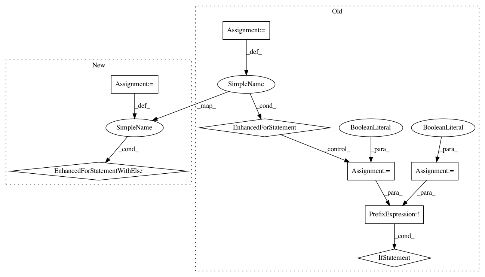

40ec35876d38c4797ad3ee9bf911b019faa5a61d,allennlp/nn/initializers.py,InitializerApplicator,__call__,#InitializerApplicator#Any#,149
Before Change
// Store which initialisers were applied to which parameters.
not_explicitly_initialized_parameters = []
for name, parameter in module.named_parameters():
is_initialized = False
for initializer_regex, initializer in self._initializers.items():
if re.search(initializer_regex, name):
initializer(parameter)
logger.info("Initializing %s using %s intitializer", name, initializer_regex)
is_initialized = True
break
if not is_initialized:
not_explicitly_initialized_parameters.append((name, parameter))
logger.info("Initializing remaining parameters with default initializer: %s",
self._default_initializer)
for name, parameter in not_explicitly_initialized_parameters:
if any(re.search(exclude_regex, name) for exclude_regex in self._exclude):
After Change
uninitialized_parameters = set()
// Store which initialisers were applied to which parameters.
for name, parameter in module.named_parameters():
for initializer_regex, initializer in self._initializers:
if re.search(initializer_regex, name):
logger.info("Initializing %s using %s intitializer", name, initializer_regex)
initializer(parameter)
unused_regexes.discard(initializer_regex)
break
else: // no break
uninitialized_parameters.add(name)
for regex in unused_regexes:
logger.warning("Did not use initialization regex that was passed: %s", regex)
logger.info("Done initializing parameters; the following parameters are using their "
"default initialization from their code")
In pattern: SUPERPATTERN
Frequency: 4
Non-data size: 8
Instances
Project Name: allenai/allennlp
Commit Name: 40ec35876d38c4797ad3ee9bf911b019faa5a61d
Time: 2017-08-25
Author: mattg@allenai.org
File Name: allennlp/nn/initializers.py
Class Name: InitializerApplicator
Method Name: __call__
Project Name: tensorflow/models
Commit Name: 461fc09474d8f532b9c0250dd54b885c537df99f
Time: 2018-05-15
Author: kongsea@gmail.com
File Name: research/slim/train_image_classifier.py
Class Name:
Method Name: _get_init_fn
Project Name: SpiNNakerManchester/sPyNNaker
Commit Name: bb062f4a9456e66354767b608541bd9e51e3b8e1
Time: 2020-02-03
Author: donal.k.fellows@manchester.ac.uk
File Name: spynnaker/pyNN/models/neuron/synapse_dynamics/synapse_dynamics_structural_common.py
Class Name: SynapseDynamicsStructuralCommon
Method Name: set_projection_parameter
Project Name: tensorflow/models
Commit Name: 461fc09474d8f532b9c0250dd54b885c537df99f
Time: 2018-05-15
Author: kongsea@gmail.com
File Name: research/tcn/estimators/base_estimator.py
Class Name: InitFromPretrainedCheckpointHook
Method Name: begin